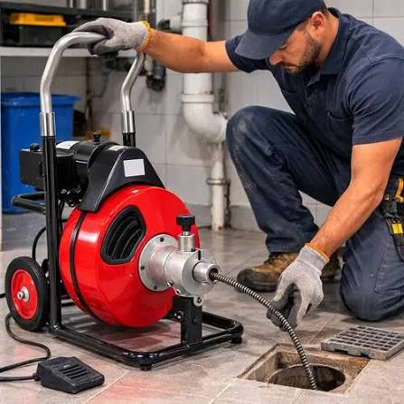

Atendimento 24h
Desentupidora de Pia
A pia é um dos pontos que mais entopem em casas, apartamentos, restaurantes e comércios. O acúmulo de gordura, restos de comida, borra de café e sabão forma uma crosta dentro do sifão e da tubulação, reduzindo a passagem da água até o entupimento total. Nossa equipe chega com máquinas rotativas e equipamentos próprios para desobstruir a pia de forma rápida, limpa e sem quebra de azulejos ou bancada.
- Pia de cozinha, banheiro e tanque
- Remoção de gordura e resíduos do sifão
- Desobstrução da tubulação até a caixa de gordura
- Atendimento residencial, comercial e condomínios